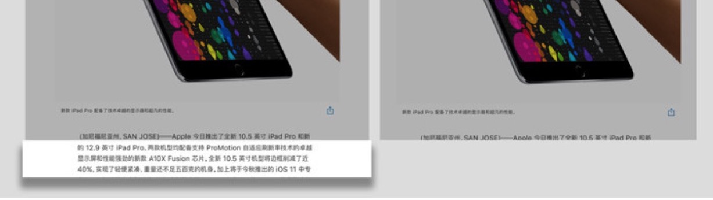

少数派测评：10.5 英寸 iPad Pro，向生产力设备再进一步
尺寸 首先两款 iPad Pro 除了尺寸的区别，其它配置都保持一致。10.5 英寸 iPad Pro 是一个新的尺寸，边框与其它几款 iPad Pro 有明显的差别，窄很多，在现在这股「窄边框潮流」的影响下，我在感官上会觉得这才是一款现代的 iPad Pro，而回头去看 9.7 或 12.9 英寸的 iPad Pro 就会觉得稍显笨重。窄边框并没有让我在握着 iPad Pro 进行阅读或者浏览网页时产生误触问题，苹果在边缘防误触这一点上一直都做得很好。
屏幕 两款新 iPad Pro 的屏幕都从原先的 60Hz 刷新频率提升到了支持 120Hz 刷新频率，苹果称这会让设备的过渡动画或者浏览网页时更顺滑，不少 其他媒体的测评 也均有提到这点。我自己刚拿到新设备时并没有感觉到明显变化，我以为大家只是心理作用。而后来让我察觉到 120Hz 刷新频率真的不一样的时候是，当我已经用了几天新款 iPad Pro，再回去操作旧款的 iPad Pro，就能明显感觉到旧款的怎么这么「卡」？其实应该是新款变流畅了，我反而不适应旧款。
20Hz 刷新频率可能会像当年的 Retina 屏幕那样，当你看习惯了之后，就再也回不去了。 120 Hz 刷新频率带来的另外一个好处是 Apple Pencil 的延迟变低了，主要在刚落笔的那一刻感受最明显，旧款 iPad Pro 会稍微有些延迟，往后的区别倒不是很明显。由于我不会画画，所以主要只测试了 Apple Pencil 用来写字时候的体验。写字跟画画不太一样，写字是一个不断落笔不断抬笔的过程，而且笔划一般都不会太长 1 ，所以我前面说刚落笔时延迟感最明显的缺点，在这一代 iPad Pro 上得到了不错的改善。我不确定用 Apple Pencil 来画画的用户会不会有体验上的提升，但我很肯定用来写字的用户会非常满意新款 iPad Pro。
此外这两款最新 iPad Pro 均支持广色域、防油渍防指纹涂层、全层压显示屏、抗反射涂层等技术。这是迄今为止，苹果所有产品中最好的显示屏。